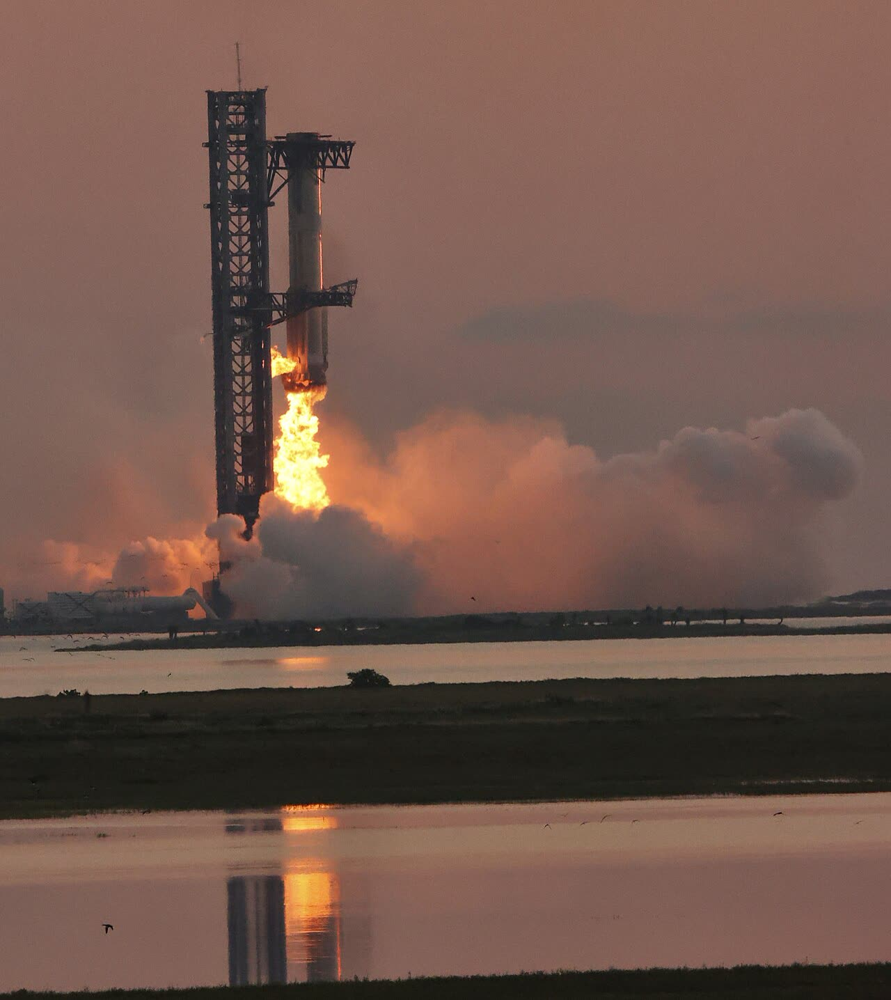

SpaceX, la torre afferra la Starship di ritorno dall'orbita: è la prima volta
A nostro avviso una cattura riuscita non abbassa da sola il prezzo dei lanci: lo fa la frequenza, e per non restare indietro l'Europa ha bisogno di più concorrenza tra privati, non di un campione di Stato.
Redazione Contrappunto · aggiornato il 15.11.2026

.jpg){kind=link}
Starship è il razzo più grande mai costruito, di SpaceX, l'azienda di Elon Musk. Ha due parti: un primo stadio, il booster Super Heavy, che spinge il razzo fuori dall'atmosfera, e uno stadio superiore, chiamato anch'esso Starship, che arriva in orbita. Finora i razzi si buttavano o si recuperavano in mare; SpaceX vuole riprenderli tra i bracci della torre di lancio, per riusarli subito. Il 13 novembre 2026, nel quindicesimo volo di prova, Starship è partita dal Texas, ha fatto 14 giri attorno alla Terra e il 14 novembre è tornata alla torre di Starbase, dove l'hanno afferrata i bracci: è la prima volta per lo stadio superiore. Il primo stadio, che doveva essere ripreso allo stesso modo, è invece esploso nel Golfo del Messico. Perché conta: se i razzi si riusano come aerei, il prezzo dei lanci scende e si lancia più spesso. L'Europa ha razzi usa e getta (Ariane 6, Vega) e una decina di lanci l'anno.
Vedi di più: 5 parole spiegate, cosa si racconta
Cosa si raccontaAl Jazeera, The Hindu e Washington Examiner (destra) pubblicano lo stesso dispaccio AP (Al Jazeera con Reuters): cattura «drammatica», con SpaceX che parla di piena riutilizzabilità. Il Guardian (centro-sinistra) la chiama una vittoria per l'azienda e ricorda che Musk vuole ridurre i costi dei viaggi nello spazio. La FAZ (centro-destra) mette l'accento sul fallimento del primo stadio e sull'assenza di spiegazioni di SpaceX. [Al Jazeera] [The Hindu] [Washington Examiner] [The Guardian] [Frankfurter Allgemeine Zeitung]
- Cattura con i bracci
- La torre di lancio ha due grandi bracci meccanici («chopstick», bacchette) che afferrano il razzo mentre scende, invece di farlo atterrare su gambe o ammarare.
- Riutilizzabilità
- Poter rilanciare gli stessi pezzi di razzo più volte, riducendo il costo di ogni lancio. I booster Falcon 9 di SpaceX già si riusano; per Starship la cattura è il passo che manca (Al Jazeera, Guardian).
- Starlink
- La rete di satelliti per internet di SpaceX: Starship ne ha rilasciati 26, del tipo V3 (Guardian).
- ESA, Ariane 6, Vega, Avio
- ESA è l'Agenzia spaziale europea. Ariane 6 e Vega sono i razzi europei, usa e getta, lanciati dalla Guyana francese; Vega è costruito dall'italiana Avio (Forbes Italia).
- AP e Reuters
- Agenzie di stampa: molte testate ripubblicano i loro testi, quindi più pagine possono contare come una sola fonte.
- Il 14 novembre 2026 la Starship di SpaceX è tornata dall'orbita alla torre di lancio di Starbase, in Texas, ed è stata afferrata dai bracci: prima volta per lo stadio superiore (Al Jazeera, Guardian, FAZ).
- Il primo stadio ha invece deviato ed è esploso nel Golfo del Messico, e il doppio recupero è saltato; SpaceX dice che la cattura dimostra la piena riutilizzabilità, ma nessuna fonte letta dà un costo per lancio.
- Per Forbes Italia nel 2025 gli Stati Uniti hanno fatto 170 lanci e l'Europa una decina, con razzi usa e getta.
Al Jazeera, The Hindu e Washington Examiner (destra) riprendono lo stesso dispaccio AP; Guardian (centro-sinistra) e FAZ (centro-destra) scrivono in proprio. Per tutte è un traguardo, e nessuna dà un costo per lancio: «piena riutilizzabilità» è per ora la tesi di SpaceX, con il primo stadio perso. A nostro avviso conta la frequenza dei lanci, non la cattura: secondo Forbes Italia gli Stati Uniti ne hanno fatti 170 nel 2025, l'Europa una decina. Per recuperare serve concorrenza tra privati, come la gara ESA, senza preferenze di bandiera. [1] [4] [5] [2] [3] [6]
La verifica punto per punto3 passaggi, 7 fonti
Qui sotto ogni cosa scritta sopra, una per una, con le fonti. Confermato: lo dice un documento originale o più fonti lette. Plausibile: lo riportano fonti serie, ma non abbiamo letto l'originale. Discordante: le fonti danno numeri diversi, e diciamo quali. Ipotesi e Opinione sono il nostro ragionamento, separato dai fatti.
Cosa è successo
La Starship di SpaceX è rientrata dall'orbita e, dopo circa un giorno di volo (22 ore per AP e Guardian, circa 20 per la FAZ) e 14 giri attorno alla Terra, è stata afferrata dai bracci della torre di lancio di Starbase, in Texas: è la prima volta per lo stadio superiore (Al Jazeera, Guardian, FAZ). Era il quindicesimo volo di prova e il secondo in orbita; la nave ha rilasciato 26 satelliti Starlink (Al Jazeera, Guardian). Il primo stadio, Super Heavy, ha invece deviato dopo il decollo ed è esploso nel Golfo del Messico: per SpaceX il computer di guida ha fermato la cattura perché il booster non era nella posizione giusta, e gli ingegneri cercano ancora la causa (Guardian, Al Jazeera); tre catture precedenti del booster erano riuscite (Al Jazeera, FAZ). Per SpaceX la cattura dimostra la piena riutilizzabilità, necessaria per un riciclo rapido e a basso costo (Al Jazeera); Musk sostiene che la riutilizzabilità ridurrà i costi dei viaggi nello spazio (Guardian). Nessuna fonte letta dà un costo per lancio. La NASA paga miliardi di dollari per usare Starship come lander lunare (Al Jazeera) e punta al 2028 per tornare sulla Luna (Guardian).
Dov'è l'Europa
Nel 2025 gli Stati Uniti hanno fatto 170 lanci, più della metà di quelli orbitali del mondo: 165 con il Falcon 9, riutilizzabile, e 5 test di Starship; l'Europa circa dieci, con i razzi usa e getta Ariane 6 e Vega (Forbes Italia, 18 giugno 2026). L'ESA ha messo oltre 900 milioni di euro in una gara tra privati (Isar Aerospace, MaiaSpace, PLD Space e altri) per arrivare in orbita entro il 2027, e vede la riutilizzabilità come traguardo successivo (Forbes Italia). Nel settembre 2025 ha firmato con Avio un contratto da 40 milioni di euro in due anni per preparare uno stadio superiore riutilizzabile (Space.com).
Il nostro punto
Una cattura riuscita non abbassa da sola il prezzo: lo abbassa lanciare spesso, e su questo l'Europa è indietro di un ordine di grandezza. La risposta non è un campione di Stato con commesse garantite: è la gara tra privati che l'ESA ha cominciato, con soldi a chi arriva davvero in orbita e senza preferenze di bandiera, perché il contribuente europeo non deve pagare di più per lanciare «europeo».
Fonti7, tutte con il link
- SpaceX's Starship captured by launchpad arms in dramatic first (15 novembre 2026, archivio d8b702bd9e329) (Al Jazeera) · consultata il 15.11.2026
- SpaceX's Starship returns to launch pad from orbit in victory for company (14 novembre 2026, archivio d4c394904b4ed) (The Guardian) · consultata il 15.11.2026
- SpaceX fängt Starship-Rakete erfolgreich mit Greifarmen auf (14 novembre 2026, archivio d404f1208c737) (Frankfurter Allgemeine Zeitung) · consultata il 15.11.2026
- SpaceX's Starship returns from orbit and is captured by launch pad arms in a dramatic first (15 novembre 2026, archivio d5080ca3c8079; pagina a pagamento, testo visibile) (The Hindu) · consultata il 15.11.2026
- SpaceX's Starship returns from orbit and is captured by launch pad arms in a dramatic first (14 novembre 2026, archivio d9d09cc45a658; pagina a pagamento, dispaccio AP) (Washington Examiner) · consultata il 15.11.2026
- SpaceX domina, l'Europa rincorre: la sfida dei razzi riutilizzabili è appena iniziata (18 giugno 2026, archivio d22c742ab1ea0) (Forbes Italia) · consultata il 15.11.2026
- European version of SpaceX's Starship? ESA signs deal for reusable upper stage demonstrator (1 ottobre 2025, archivio d5799487ef484) (Space.com) · consultata il 15.11.2026
Testo preparato con strumenti di intelligenza artificiale e pubblicato senza revisione umana. Come lavoriamo